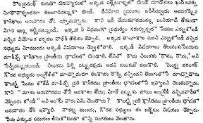
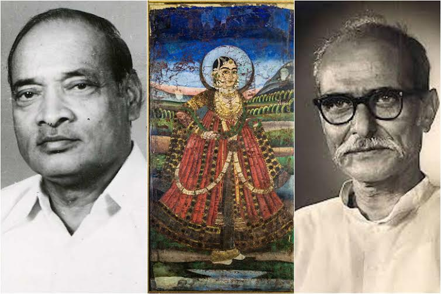
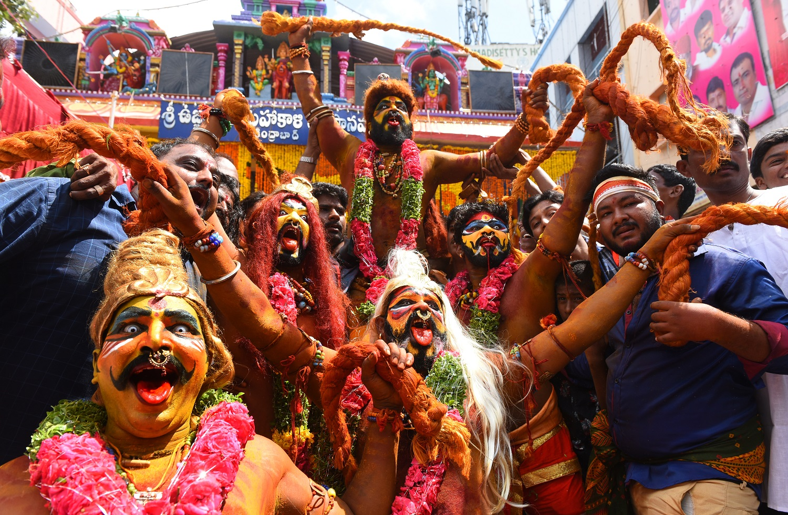
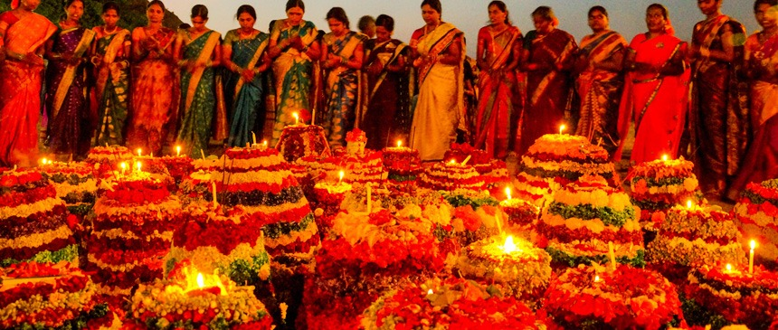
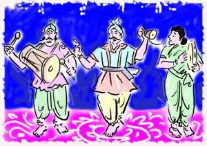

The Culture of Telangana in India has a cultural history of about 5,000 years. The region emerged as the foremost centre of culture in Indian subcontinent during the rule of Kakatiya, the Qutb Shahi and Asaf Jahi dynasties— (also known as the Nizams of Hyderabad). The rulers' patronage and interest for arts and culture transformed Telangana into a unique multi-cultural region where two different cultures coexist together, thus making Telangana the representative of the Deccan Plateau and its heritage with Warangal and Hyderabad being its epicenter. The regions' major cultural events celebrated are "Kakatiya Festival" and Deccan Festival along with religious festivals Bonalu, Bathukamma, Dasara, Ugad
i.
1)Languages

About 76% of the population of Telangana speak Telugu, 12% speak Urdu, and 12% speak other languages.[5][6] Before 1948, Urdu was the official language of Hyderabad State, and due to a lack of Telugu-language in educational institutions, Urdu was the language of the educated elite of Telangana. After 1948, once Hyderabad State joined the new Republic of India, Telugu became the language of government, and as Telugu was introduced as the medium of instruction in schools and colleges, the use of Urdu among non-Muslims decreased.
2)Literature

See also: List of Telangana poets
Poets of Telangana from the early era include Pothana, Kancherla Gopanna or Bhakta Ramadasu, Malliya Rechana, Gona Budda Reddy, Palkurthi Somanatha, Mallinātha Sūri, and Hulukki Bhaskara. In the modern era poets include such figures as Padma Vibhushan Kaloji Narayana Rao, Sahitya Akademi Award recipient Daasarathi Krishnamacharyulu, and Jnanpith Award recipient C. Narayana Reddy, as well as P. V. Narasimha Rao, ninth Prime Minister of India. Samala Sadasiva was selected for the Kendra Sahitya Puraskaram distinction. His book Swaralayalu on the subject of Hindustani classical music won the award for the year 2011.[8]
Urdu literature has always enjoyed patronage from successive rulers of the Qutb Shahi and Asaf Jahi era. Mohammed Quli Qutb Shah, the fifth ruler of the Qutb Shahi dynasty is regarded as one of the pioneers of early Urdu poetry.
During the rule of Nizams of Hyderabad, printing was introduced in the area.
3) Religion
Main article: Demographics of Telangana
The major religions of the people are Hinduism and Islam,[9] though Buddhism was the dominant religion up to the 6th century. It is the home of Mahayana Buddhism as revealed by the monuments of Nagarjunakonda. Acharaya Nagarjuna presided over the World University at Sri Parvata. Hinduism was revived during the time of the Chalukyas and the Kakatiyas in the 12th century. The Vijayanagar rule saw the glorious days of Hinduism when the famed emperors, Krishnadeva Raya in particular, built new temples and beautified the old ones. Siva, Vishnu, Hanuman and Ganapati have been the popular Hindu Gods. The Vugra Narasimha Swami Temple at Yadagirigutta and Thousand Pillar Temple at Warangal are among the oldest shrines in the state attracting people from different parts of the country for hundreds of years.
4)Major religions structures
Bhadrachalam Temple
Yadadri : Lord Vishnu (whose reincarnation is Lord Narasimha). The main deity is Lakshmi Narasimha Swamy.[10] Located in Yadadri District. In Ancient days Sri Yada Maharshi son of Sri Rushyashrunga Maharshi with the Blessings of Anjaneya Swamy had performed great penance for Lord Narasimha Swamy. After securing blessing for his penance Lord Narasimha had come into existence in Five Avatharas called as Sri Jwala Narasimha, Sri Yogananda Narasimha, Sri Ugra Narasimha, Sri Gandaberunda Narasimha, Sri Lakshmi Narasimha. As such this is known
Bhadrachalam Temple is a Lord Sree Sita Ramachandra Swamy Temple in Bhadrachalam, Bhadradri District. Bhadrachalam-The name derived from Bhadragiri (Mountain of Bhadra-a boon child of Meru and Menaka). According to an Ithihasas, the significance of this shrine dates back to the Ramayana Era. This coherent hill place existed in "Dandakaranya" Of Ramayana period where Rama with his consort Sita and brother Laxmana had spent their vanavasa- and Parnashaala (the place connected to the famous Golden Deer and the place from where Sita was abducted by Ravana.) is also in the vicinity of this temple site. It is at this Mandir site that, long after Ramavatara, Bhagawan Mahavishnu manifested Himself as Rama again to fulfil a promise He made to His Bhakta Bhadra, who continued his Tapas through Yugas, praying for the grace of the Bhagawan Sri Ramachandra murthy.
5)Banjara spiritual/religious person
Jairam Bapuji,[16] Sevya Bapuji[17] are the very famous Banjara Or Lambadi Spiritual Persons from Balu Thanda / Jairam Thanda, Madgul Mandal, Mahabubnagar District, Telangana.
6)Festival

Festivals are celebrated with much fervor and people used to go to temples on these days to offer special prayers. Some of the Festivals are Dasara, Bonalu, Eid ul fitr, Bakrid, Ugadi, Makara Sankranti, Guru Purnima , Sri Rama Navami, Hanuman Jayanti, Raakhi Pournami, Vinayaka Chaviti , Nagula Panchami, Krishnashtami, Deepavali, Mukkoti Ekadasi, Karthika Purnima and Ratha Saptami
7)Religion festival

Bathukamma flower arrangement
Telanganites ( Telangana's citizens) not only celebrate the main festivals, but also celebrate certain regional festivals like Bonalu, Batukamma[18] all over Telangana districts, Yedupayala Jatara in Medak, Sammakka Saralamma in Warangal district.
8) Culture sites
Salar Jung Museum, Hyderabad, Telangana in 1951 is the largest collection of antiques of an individual in the world.
Telangana has many museums which depicts the culture of the erstwhile kingdoms of the state. The Salar Jung Museum is an art museum located on the southern bank of the Musi river in the city of Hyderabad, Telangana, India. It is one of the three National Museums of India.[30] The museum's collection was sourced from the property of the Salar Jung family. The Salar Jung Museum is the third largest museum in India housing the biggest one-man collections of antiques in the world. It is well known throughout India for its prized collections belonging to different civilizations dating back is very largest collection to the 1st century.
9)Cuisine
Main articles: Telugu cuisine and Hyderabadi cuisine
Hyderabadi biryani
Telangana has two types of cuisines, the Telugu cuisine and Hyderabadi cuisine. Telugu cuisine is the part of South Indian cuisine characterized by their highly spicy food. The Telangana state lies on the Deccan plateau and its topography dictates more millet and roti (leavened bread) based dishes. Jowar and Bajra features more prominently in their cuisine. Due to its proximity with Maharashtra, Chhattisgarh and northwest Karnataka, it shares some similarities of the Deccan plateau cuisine. The region has the spiciest food amongst all other Telugu and Indian cuisines. Telangana has some unique dishes in its cuisine, such as jonna rotte (sorghum), sajja rotte (penisetum), or Uppudi Pindi (broken rice). In Telangana a gravy or curry is called Koora and Pulusu (Sour) in based on Tamarind. A deep fry reduction of the same is called Vepudu. Kodi pulusu and Mamsam (meat) vepudu are popular dishes in meat. Vankaya Brinjal Pulusu
or Vepudu, Aritikaya Banana
pulusu or Vepudu
are one of the many varieties
of vegetable dishes.
10)Performing arts
Dance
Main article: Perini Shivatandavam
Perini Sivatandavam or Perini Thandavam is an ancient dance from Telangana which has been revived in recent times.[36] It originated and prospered in Telangana during the Kakatiya dynasty.
The Perini Thandavam is a dance form usually performed by males. It is called 'Dance of Warriors'. Warriors before leaving to the battlefield enact this dance before the idol of Lord Shiva. The dance form, Perini, reached its pinnacle during the rule of the 'Kakatiyas' who established their dynasty at Warangal and ruled for almost two centuries. It is believed that this dance form invokes 'Prerana' (inspiration) and is dedicated to supreme dancer, Lord Shiva.
Bonalu The folk festival of Bonalu in the Telangana region brings with it celebrations which see the colourfully dressed female dancers balancing pots (Bonalu), step to the rhythmic beats and tunes in praise of the village deity Mahankali. Male dancers called Potharajus precede the female dancers to the temple lashing whips and neem leaves adding colour to the festivity.
11)Music
Telangana has a diverse variation of music from carnatic music to folk music. [Kancherla Gopanna,[37] popularly known as Bhakta Ramadasu or Bhadrachala Ramadasu was a 17th-century Indian devotee of Rama and a composer of Carnatic music. He is one among the famous vaggeyakaras (a person who not only composes the lyrics but also sets them to music; vāk = word, speech; geya = singing, singable; geyakāra = singer) in the Telugu language.
The folk songs of Telangana had left a profound impact on the Statehood movement[38] as it played a significant role in the success of the Dhoom-Dham, a cultural event that was a vital part of the agitations.
12)Oggu Katha

Main article: Oggu Katha
Oggu Katha or Oggukatha is a traditional folklore singing praising and narrating the stories of Hindu gods Mallana, Beerappa and Yellamma.[39] It originated among the Yadav and Kuruma Golla communities, who devoted themselves to the singing of ballads in praise of Lord Shiva (also called Mallikarjuna).[40] These tradition-loving and ritual-performing community moves from place to place, narrating the stories of their caste gods. Oggus are the traditional priests of the Yadavas and perform the marriage of Mallanna with Bhramaramba.
The narrator and his chorus i.e. two narrators-help in dramatizing the narration as very often, they transform themselves into two characters. The dramatization of the narrative is what gives the Oggu Katha its predominant place in the ballad tradition in Telangana, where Oggu Katha prevalent. The singers visit the shrine of Komrelly Mallanna Temple every year.
13)Cinema
Main article: Telugu Cinema
A western street replica at Ramoji Film City
Telugu cinema, also known by its sobriquet as Tollywood, is a part of Indian cinema producing films in the Telugu language, and is centered in the Hyderabad, Telangana neighbourhood of Film Nagar.[41] The industry holds the Guinness World Record for the largest film production facility in the world, is one of the best tourist attraction in hyderabad Ramoji Film City.[42] The Prasads IMAX located in Hyderabad is one of the largest 3D IMAX screen, and the most attended cinema screen in the world.[43][44][45] As per the CBFC report of 2012, the industry is placed second in India, in terms of films produced yearly.[46] because of the film "Bahubali" casting Prabhas and Anushka.

.jpg)